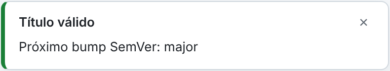

Conventional PR Check
Conoce el próximo bump SemVer
Cada título válido te dice si el cambio es major, minor o patch, igual que la GitHub Action en tu CI.
feat!:
require two-factor login
MAJOR
feat:
add dark mode
MINOR
fix:
handle empty input
PATCH
